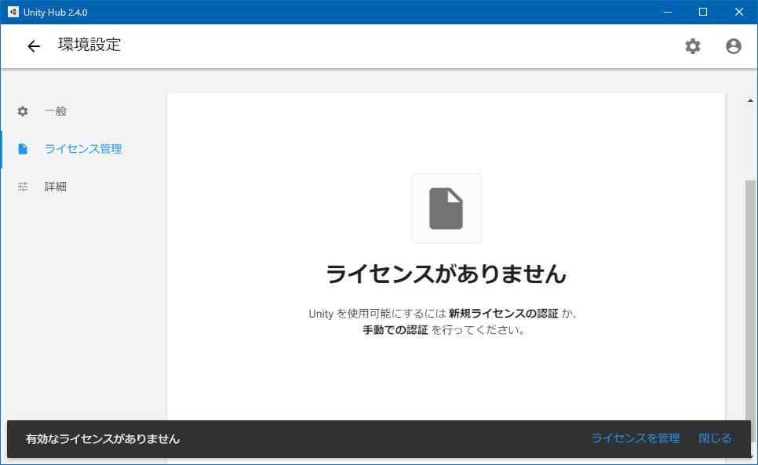
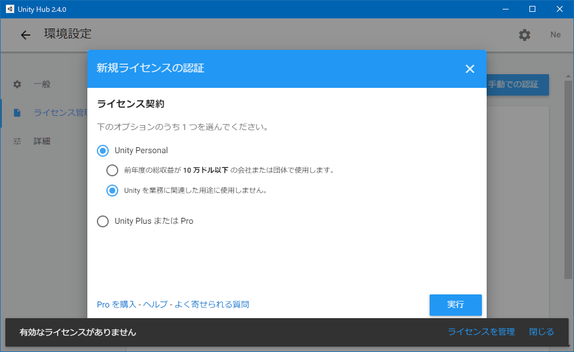

Unity を Windows 10 にインストールして始めてみる
ふと思い立って Unity を始めてみることにした。今回は Windows 10 環境に Unity をインストールして、初回起動するところまでをやってみる。
目次
Unity Hub をインストールする
Unity はバージョンごとに色々と差異があるようなので、複数のバージョンの Unity を管理できる Unity Hub を使うのが良いらしい。
UnityHubSetup.exe をダウンロードし、インストールする。
サインアップ・サインインする
Unity を使うには、アカウント登録とライセンス認証が必要になる。といっても、個人で私的利用する分には、無料のライセンスで問題ない。
- Unity Hub を起動する
- 右上ユーザアイコン → サインイン → 「こちらで ID を作成」 → Google アカウントでサインイン
- 参考 : Unityアカウントの作成方法【初心者向け】 | ゲームの作り方！

- 右上歯車アイコン → 左メニュー「ライセンス管理」 → 新規ライセンスの認証 → Unity Personal → 「Unity を業務に関連した用途に使用しません。」 → 「実行」
- 参考 : Unity Hubの使い方【初心者向け】 | ゲームの作り方！

Unity をインストールする
アカウントとライセンスの準備ができたら、Unity 本体をインストールする。本稿執筆時点での最新の安定版である「Unity 2019.4.10f1 (LTS)」をインストールすることにしよう。
- 左上矢印「←」アイコンで戻る → 左メニュー「インストール」 → 右上「インストール」ボタン
- Unity 2019.4.10f1 (LTS) がデフォルト選択されているのでそのまま「次へ」ボタン
- モジュールを追加 :
- Dev tools : Microsoft Visual Studio Community 2019 … デフォルトでチェックされたまま
- Platforms : 今回は Web 向けに作るつもりで、「WebGL Build Support」をチェックする
- Documentation : デフォルトでチェックされたまま
- Language packs (Preview) : 「日本語」をチェックしてみる
Platforms 部分は、自分の作りたいモノに合わせて選ぶ。
ダウンロードとインストールが始まるので待つ。ファイルサイズが重たくて、Unity 本体のインストールに1時間くらいかかった。
新規プロジェクトを作る
Unity をインストールしたら、Unity Hub の画面上から、プロジェクトの管理もできる。
- 左メニュー「プロジェクト」 → 「新規作成」ボタン → テンプレート「3D」
こんな感じでプロジェクトを作れば、Unity の開発画面が開く。
今回はココまで。